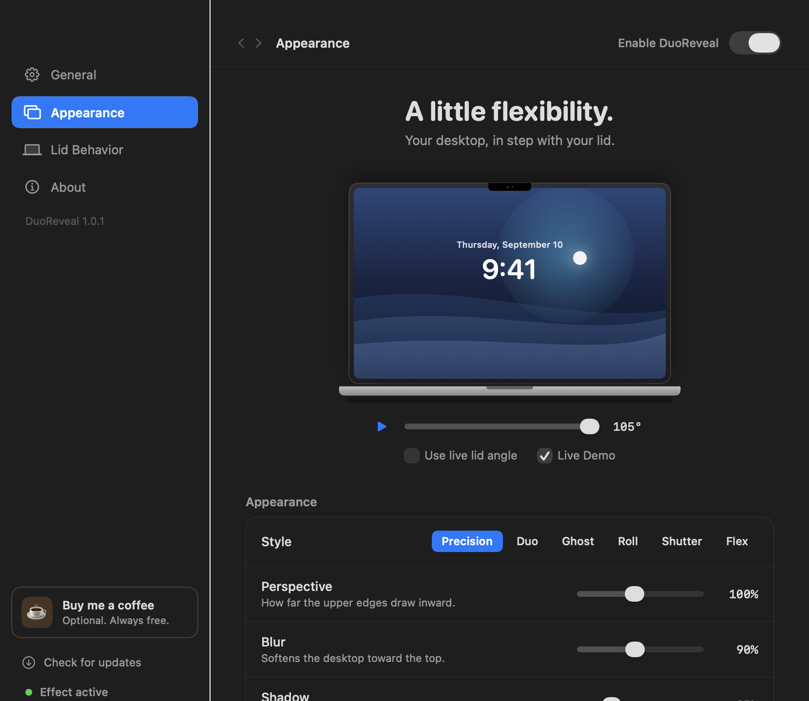
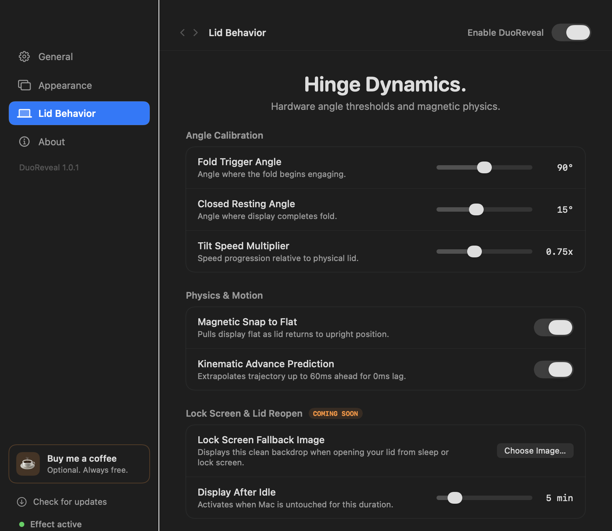
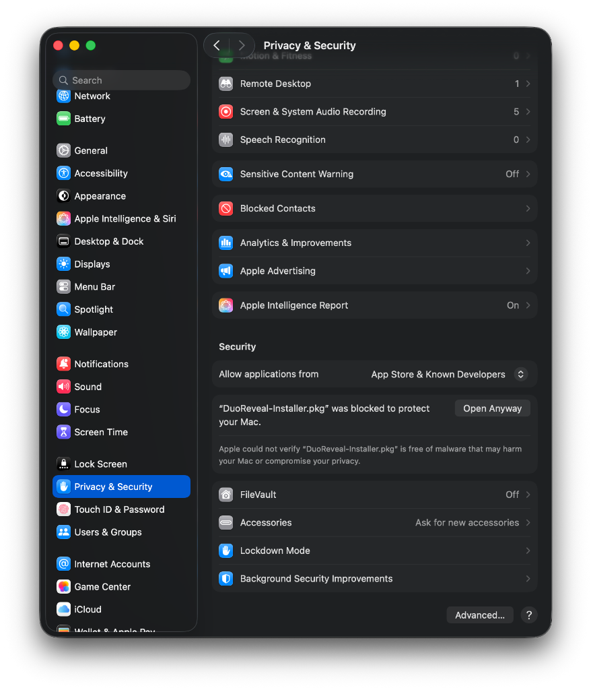

As you tilt your MacBook lid, DuoReveal anchors your real desktop into a stationary 3D spatial plane. Hardware-native. Zero drain. Mathematically precise.

Every other folding display app is a continuous screen recorder in disguise — draining your battery and heating your chassis while you just try to work. DuoReveal is fundamentally different.
Other apps keep ScreenCaptureKit streaming at 60–120 FPS continuously — devouring 8–15% battery per hour even when your lid is fully open. DuoReveal sleeps completely until your lid actually moves.
Projective homography anchored to the physical MacBook hinge. No cheap trapezoid warp.
Precision hardware calibration engineered directly for your MacBook. Instant response with zero background battery impact.
Window level 2,147,483,631 — over fullscreen apps, Mission Control, and Lock Screen.
VRAM only. Texture wiped the moment your fold completes. Nothing on disk.
Precision · Duo · Ghost · Roll · Shutter · Flex with live optical sliders.
DuoReveal is not an invisible script running in the shadows. It is an Apple-caliber native macOS studio equipped with real-time shader tuning, Force Touch trackpad haptics, multi-pack acoustic sounds, and a Dynamic Notch HUD with seamless in-app updates.
As you tilt your MacBook display, your Force Touch trackpad produces subtle tactile clicks for each degree of movement. When your lid approaches the magnetic snap threshold or 90° boundary, an alignment latch pulse confirms the transition physically under your fingertips.
Every single degree change triggers rich, responsive audio designed to match your style. Includes a crystal magnetic snap chime when reaching resting positions:
The Dynamic Notch HUD sits flush behind your MacBook camera bezel. It remains 100% concealed when you work, and fluidly drops down when you tilt the lid with real-time degrees (90°, 75°, 25°).
When an update is released, the Notch automatically expands in size to display an interactive update pill. Just tap the notch icon to download, install in-place, and relaunch immediately — zero manual dragging.
Choose between Precision Fold, Ghost Glass, Duo Fold, Roll Curve, Shutter, and Flex. Adjust Perspective taper, Depth Defocus Blur, Crease Shadows, and Tilt Multipliers in real-time with zero restart required.
Closing your lid to sleep no longer causes black flash artifacts on reopen. DuoReveal locks the last pristine desktop texture into memory before sleep, tracks hinge angle with 0.01° sub-degree precision, and includes a customizable Lock Screen backdrop timer.

DuoReveal completely halts its Metal graphics rendering loop and sensor thread whenever your lid rests in normal upright positions (≥90°). Your MacBook runs cool, whisper-quiet, and battery stays 100% dedicated to your actual work.
Physical hinge sensors detect physical lid tilt instantaneously. Instant response with zero polling.
An instantaneous one-shot screen snapshot into GPU memory. Zero background capture while you work.
120 FPS graphics engine renders authentic perspective, depth defocus, and shadow — anchoring your screen in 3D space.
Unlike every other app that uses naive 2D trapezoid scaling, DuoReveal maps each pixel through a true projective transform anchored at the physical hinge line. Straight window edges stay perfectly straight. UI grids don’t warp. It looks exactly like a real 3D object.
Every competing app is fundamentally a background video recorder that happens to show a fold effect. DuoReveal doesn’t record. It reads hardware and renders physics.
8-level binomial filter compute shader for anti-aliased depth-of-field defocus at ProMotion frame rate.
SMAppService integration — DuoReveal is ready the moment your Mac wakes, without a single visible window.
Tune Perspective, Blur depth, Crease Shadow, and Tilt Speed with live-preview sliders.
A fluid animation blooms from under the camera notch showing live lid angle in real time. Retracts instantly.
Precision · Duo · Ghost · Roll · Shutter · Flex. Each is a distinct Metal shader with its own optical character.
Renders at system maximum window level — seamless over fullscreen apps, Mission Control, and Lock Screen.
DuoReveal’s entire rendering pipeline runs inside your GPU’s local VRAM. The instant a fold completes, the frame texture is released. No cloud, no disk, no telemetry. Not even a log file.
Apple Silicon MacBook Air or MacBook Pro — M1, M2, M3, or M4 chip series.
macOS 14.0 Sonoma, macOS 15.0 Sequoia, or newer. Full Apple Silicon 64-bit native binary.
Standard Screen Recording permission and Accessibility access for the fold rendering pipeline.
DuoReveal integrates directly with your MacBook's native physical hinge hardware sensors. This enables instant sub-degree precision with zero perceptible latency — without continuous software polling, and with zero background battery drain.
No. When your MacBook lid is open at ≥90°, DuoReveal is completely dormant — 0.0% CPU, 0.0% GPU. The Metal render loop and ScreenCaptureKit only activate at the exact moment you fold the lid past the threshold angle.
macOS requires Screen Recording permission for any app that reads on-screen pixels. DuoReveal uses Apple’s official ScreenCaptureKit to capture a single instantaneous snapshot into GPU memory at fold time — not a streaming video, not a recording.
Yes. DuoReveal renders at macOS window level 2,147,483,631 — the highest possible value. It appears seamlessly over any fullscreen app, Mission Control, and even the macOS Lock Screen.
DuoReveal was conceived, designed, and developed by Prince Tagadiya under Creato4 Lab. Every Metal shader, every animation curve, and every interaction was crafted by hand.
Download DuoReveal for macOS. No account, no subscription, no nonsense.
Because DuoReveal is independently distributed (without the $99/year Apple Developer certificate), macOS Gatekeeper prompts for one-time confirmation. Follow these easy visual steps:
Download either DuoReveal-Installer.pkg or DuoReveal-Beta.dmg above and open it from your Downloads folder.
macOS displays:
“DuoReveal-Installer.pkg Not Opened”.
Click Done (do NOT click Move to Trash).
Open System Settings → click Privacy & Security in the sidebar → scroll down to Security → click [Open Anyway].
Touch your Mac’s Touch ID sensor or enter your login password. DuoReveal installs directly into /Applications and launches immediately!
